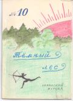

Тёмный лес
N10

ЛАФАНИЯ
ода эпическая в нескольких песнях
ПЕСНЬ ПЕРВАЯ
I
Приемлю авторучку, мной забвенну,
Отру с нея чернильну грязь и пыль
И ныне воскрешу стихами бренну
Лафанския страны роскошну быль.
Почто умолкла песнь недавней славы,
Когда деянья зрели величавы
Сыны земли лафанския святой
И по крапиве шли, что исполины,
По топям, утопая в хлябь трясины
И восставая с дебрями на бой.
II
Почто не слышим славы сих походов,
Когда лафанцы маршем по лесам
Почти до пышных солнечных заходов
Ступали вдаль, дивуяся красам?
Когда, пройдя поля, леса, поляны,
На брег крутой мятущейся Беляны
Они всходили гордыя стопой,
Простой обед без пышностей вкушали,
Струи журчаньем слух свой услаждали
И обретали радость и покой?
III
А где восторг? Где чувство буйной битвы,
По жилам огнь и крик на страх врагам,
И тот стефанец, шепчущий молитвы
Его укрывшим низеньким кустам?
И, наконец, где шахматны турниры,
О коих петь моей не хватит лиры?
Потщусь же ныне, музы жалкий раб,
Воспеть без хитростей иных заокеанских
Теченье дней, полёт часов лафанских...
И да не будет стих мой сух и слаб.
IV
Начну с того, как превелик Романов
(когда и где не поминаю днесь)
Явише в свет первейшим из стефанов
И зародите был стефаном весь.
"Стефан явише!"- слово акушера;
Зело великой в нём вспылала вера,
Что президентом первым Жене быть,
Лишь только он Стефанию велику
Провозгласил впервые зычным криком,
Как из истории Стефании судить.
V
Ура! Вскричите, взрадуйтесь, лафанцы!
В Никологорском девственном краю,
Где жили хулиганцы да поганцы,
Я вдруг культурную Стефанию пою.
Пускай она над речкой Чуркой бурной
Была в те дни не столь ещё культурной,
Но президентом возведенна сим
Сравнится ли республика любая
С племенами столь девственного края
И с бытом их общинно-родовым?!
VI
Был дивен край стефанского народа:
Бескрайние леса, поля вдали,
И высилась гора до небосвода,
Под оною таинственно текли
Москвы-реки прозрачны тихи лимфы,
Во коих лепны иностранны нимфы
Резвились и плескались той порой;
Вблизи, журча по Чуркину оврагу,
Малютка-Чурка ледяную влагу
Москве-реке дарила под горой.
VII
И в том краю,где лишь дикарь-пекинец
В набедренной повязке и с копьём
Носился средь капустниц и крушинниц,
Евгений Первый начал жить и в нём
Творить дела столь важные для мира,
Что их воспеть моя не тщится лира.
Собрав зело внушительную рать,
Повёл колонизацию Евгений,
Стал расширять простор своих владений,
Добром и злом народы покорять.
VIII
Он шёл к вождям, их чести удостоя,
И о республике им говорил;
И шли они в Стефанию без боя.
И лишь пекинцев он не покорил.
Вставал Великий Пека ранним утром
И оттого был в мире самым мудрым,
И понял он: необходим прогресс,
Тогда стефанское минуем бремя.
И потому своё родное племя
Назвал республикою РВС.
IX
Вструбите трубы славу велигласно!
Взыграйте, лиры, тую на струнах!
Лишь токмо вознеслась денница красна,
Как отразилась в пышных знаменах.
Каким делам свидетель днесь природа?
Куда текут сии толпы народа?
На РВС Стефания войной
Идёт под грохот бурных барабанов.
Рассеялась гряда ночных туманов,
Приоткрывая дол, где грянет бой.
X
Так началась одна из многих войн
Стефании великой с РВС.
То с луком пробегал пекинец-воин,
Победным кличем оглашая лес,
То быстрые зиждители победы
Стефанские неслись велосипеды,
И, претворяя грады в пыль и прах,
Производя погромы и пожары,
Стефанские ракетные удары
Вселяли во врагов священный страх.
XI
Всё, что воспето в "Эрвеэсиаде",
Не буду днесь повторно воспевать,
Понеже, возглаголю правды ради,
Повторно не пришлось бы вам зевать.
Напомню лишь, что фениксом из пепла
Из битв Стефания рождалась, крепла
И вновь вела войска на РВС.
Итак! Трубите, трубы, величаво
Стефании былой былую славу,
Переполняйте громом "Тёмный лес".
XII
Почто пою стефанцам дифирамбы?
Меня стефанцем могут обозвать...
Но я клянусь: отныне эти ямбы
Одних лафанцев станут воспевать!
Всё тленно в мире, час триумфа краток.
Я опишу Стефании упадок,
Как президентская пустая спесь
Стефании величье погубила,
Как новая явилась в мире сила...
Об этом я сложу вторую песнь.
(продолжение следует)
█
ПРИМЕЧАНИЯ К "ПЕСНИ ПЕРВОЙ"
1) Беляна - священная река лафанского народа.
2) "...с бытом их общинно-родовым" - граждане первых никологорских государств часто были родственниками.
3) "...иностранны нимфы" - имеется в виду никологорский дипломатический пляж.
4) Пекинцы - никологорское племя во главе с Пекой. Пекинцы одевались в полотенце, обмотанное вокруг плавок.
5) РВС. Истинное значение этих букв лафанской наукой не открыто. Стефанцы расшифровывали: Республика Водки и Самогона.
6) "Стефанские ракетные удары" - пуляние сосновых шишек бадминтонными ракетками.
7) "Эрвеэсиада" - героический эпос о войне Стефании с РВС.
СЛОВАРЬ УСТАРЕВШИХ ЦЕРКОВНОЛАФАНСКИХ СЛОВ
Велигласно - громко
Денница - утренняя заря
Зело - очень
Зиждитель - создатель
Лимфы - воды
Понеже - поскольку
Токмо - только
Тую - ту
ЧЕТВЕРОСТИШИЯ █
* * *
Аркадия... страна былых поэтов.
Так говорит народное преданье.
Не умерла Аркадия! Ведь это
Лафании шутливое названье.
* * *
Я вирши написал. О том
Узнав, друзья мои мгновенно скисли.
Друзья! Я их пишу в прямом,
А остальные в переносном смысле.
* * *
Я в двух мирах явил свой лик
(Учёбы мир, мир вдохновений):
В одном - бездарный ученик,
В другом - лафанский гений.
* * *
Былое на слом! В поход пора.
Вперёд! Вперёд! - Ты иначе не мыслишь.
Но, если ты скорость света превысишь,
То, в завтра стремясь, попадёшь во вчера
* * *
Ходят заключённые по кругу
Парами в цепочку друг за другом,
Надзирает завуч, строг и сед...
Ни за что на целых десять лет!
* * *
Лафанские будни от слова будить,
С него начинаются будни.
Чем дольше и громче будильник звенит
Над ухом, тем сон беспробудней.
РОСТОВЩИК
Я ростовщик, я не безгрешный,
Но вами осуждён поспешно:
Я сердце людям отдавал!
...взаймы и под процент, конечно.
* * *
Друзья, к труду - иначе жизнь мертва.
Окончен труд - минута торжества,
И стоп...
К труду! Чтоб вновь, окончив труд,
Изведать радость нескольких минут.
ИЗ СОКРОВИЩНИЦЫ ЛАФАНСКОЙ ЛИТЕРАТУРЫ
Странно и невероятно... В конце 1969 года (эпоха Безвременья) появились первые главы замечательной поэмы █ "Воры". Поэма была встречена холодно, оставалась забытой в течение всего Безвременья и получила признание только в эпоху Возрождения (точнее - в январе 1973).
Ниже мы публикуем отрывки из этой неоконченной поэмы.
ВОРЫ
I
Белка стала взрослой,
Ей теперь не скучно:
Надо ей квартиру
Подыскать получше,
Надо ей орехи
На зиму готовить,
А потом - визиты...
Белка в свет выходит.
Два дупла набито
Всякими грибами.
Белка суетится
Днями и ночами.
"Радость трудовую
Я теперь узнала,
В детстве о такой я
Не подозревала."
II
Всё покрыто снегом,
Белка только рада:
За работу летом
Ей теперь награда.
Но однажды белке
Есть хотелось вкусно;
Скок, и в кладовую,
А в дупле-то пусто!
"Что же приключилось?
Или я ошиблась?
Нет, моя кладовка,
Лишь кора свалилась."
Прошлого наследье
Не вполне изжито,
Даже в современном
Лесе есть бандиты.
Старая ворона
Белке разъяснила:
"Человек украл всё,
Подлый зверь, громила."
█
В этом номере "Тёмного леса" мы решили поместить знаменитое обращение Фиолетового к лафанцам - значительный памятник лафанской культуры эпохи Пробуждения. Обращение перепечатано из газеты "Неделя" N1 1969 (Княжество Дормэ)
ОБРАЩЕНИЕ
КО ВСЕМ ГРАЖДАНАМ ЛАФАНИИ
Лафания должна идти вперёд. У нас развивается культура, промышленность, торговля. Мы должны показать нашим врагам кто действительно победил во время войны. Мы, правда, уже обогнали наших врагов по размаху печати, наша армия сильнее армии Стефании. Но нам надо пройти ещё много. Мы будем выпускать свои конфеты. Вперёд, Лафания!
НОВОСТИ
Выходит многотомный сборник стихотворений █ "Полутени". Уже вышло пять томов. Публикуем стихотворение из этого сборника, входящее в "Шахматный цикл".
ВЫБОР ЦВЕТА
Пусть шахматы не жизнь, в которой
Фигуры рвут друг дружке горло,
Хитрят и цвет свой изменяют,
Чернят друг дружку, обеляют;
Казаться хочет чёрный белым
(И счастье, если не умело),
Стремится к власти над народом,
Чтоб сразу делать по два хода.
Да, в жизни всё не так-то чётко:
В ней мало белых, мало чёрных
И очень много просто серых...
Но в ней борьба всё тех же светлых
Всё с тем же мрачным миром тёмных,
И в ней приёмов много тонких:
Гамбитов, вилок, рокировок
И прочих всех перестановок.
А разница цветов? Открыто
За белых более гамбитов,
Когда в костры за святость дела
Уходят гордо пешки белых.
Нужны ли белые для чёрных,
А те для белых? Да, бесспорно.
Но миллиарды пёстрых пешек
Одною правдой не утешить.
Не утешенье - только слёзы
В том, что ясны биоценозы,
Что там, где овцы - там и волки.
Что истреблять их - мало толка;
И кто живёт лисой, кто скунсом...
Избави, бог, от этих функций.
Что ж, загадаем кто какими.
Кто любит белыми - бог с ними:
И те, и эти здесь не лучше.
Сойдутся армии, как тучи;
Сразятся тридцать два героя,
Сто мыслей, сто идей - два строя...
Но ведь идеи - лишь орудья,
А у орудий те же люди,
И за фигуры мы ответим,
И будет дело тут не в цвете.
А в жизни несколько иначе,
В ней цвет довольно много значит,
Острей борьба, сложней идеи,
И выбрать цвет куда труднее.
█
ЭПИГРАММЫ
ДРУГУ
Ты не доволен, что опять
Я всю поэму стал ругать,
Найдя корявые слова.
Но помни: хочешь танцевать,
Так научись ходить сперва.
█
РЕДАКТОРУ "КОМПАСА"
"Еженедельник я издал" -
Сказал Илья, лихой работник.
Когда же месяц истекал,
Он: ежемесячник - сказал,
Теперь он скажет: ежегодник.
█
КОНСПЕКТ ЛЕКЦИЙ
Профессор стал конспект листать,
А я сидел бесстрашно.
- Что это? Чистая тетрадь?!
- Да. Вы ж сказали нам писать
Лишь только то, что важно.
█
Последнее изменение страницы 20 Mar 2019
ПОДЕЛИТЬСЯ: